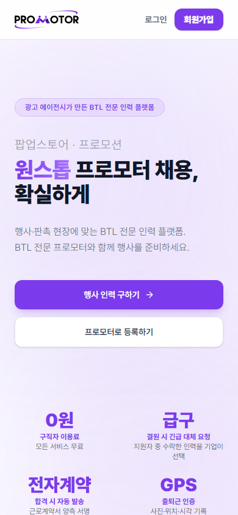
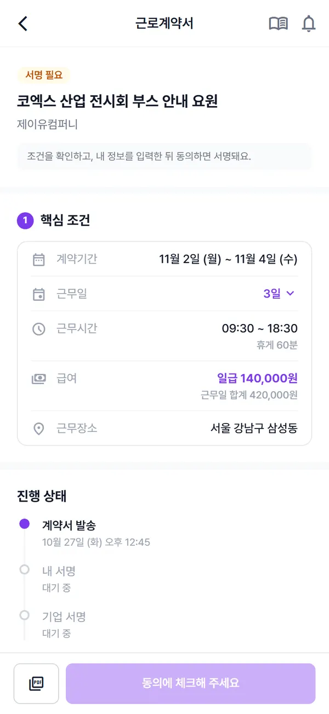
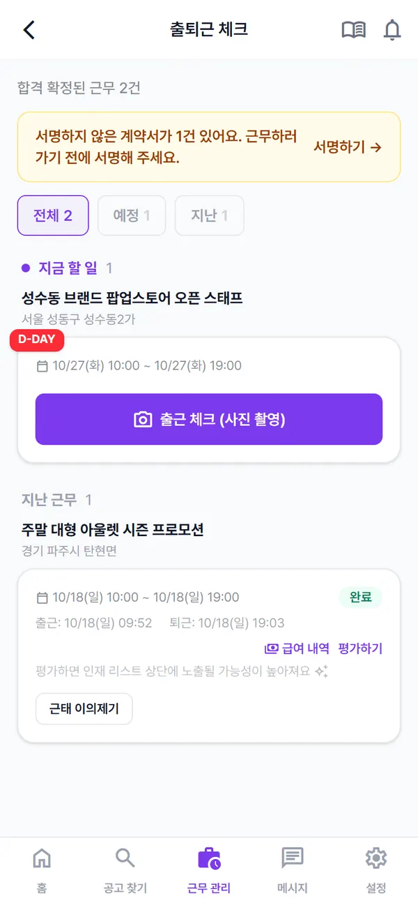

Portfolio · 개발 · 운영 · 기획 · 2026.11
만들고, 운영하고,
문서로 남기는
개발자
 양혁준HyeokJun Yang
양혁준HyeokJun Yang
실사용자 1,500명이 넘는 인력매칭 플랫폼 '프로모터'의 프론트엔드를 혼자 맡아, 화면설계서와 기능명세서를 쓰고, 개발하고, 장애를 추적하고, 배포를 자동화했습니다. 개발, 운영, 기획 순서로 정리했습니다.
1,500명+프로모터 실제 이용자
(2026.11.11, 회사 공개 수치)
100건+프로모터 채용 확정
(2026.11.11)
47개혼자 설계·구현·배포한 화면
(3개 포털)
명령 한 줄점검 17건 → 빌드 → 배포 →
운영 반영 확인 자동화
137장실제 화면 캡처를 담은
화면설계서 (화면 42개)
15건직접 만든 AI 에이전트 팀이
8주간 수행한 사내 프로젝트
01프로그램 개발 및 유지보수3개 포털 · REST API 전환 · 인증 통합 · 웹·앱 공용 코드
promotor.kr
02시스템 및 서비스 운영장애 원인 추적 · 배포 자동화 · 실사용 개선 사례 · 이용 가이드
운영 2026.05~11
03서비스·시스템 기획과 문서화화면설계서 · 기능명세서 · FE↔BE 설계 규격 · Figma
요구사항→문서
04AI 컴퍼니: AI 에이전트 13명의 사내 제작팀Claude Code 에이전트·예약 루틴 · 업무 완료 262건
생성형 AI 활용
05기획부터 오픈까지 한 그 밖의 작업회사 홈페이지 · 브랜드 사이트 · AI 상담 서비스(실결제)
1인 풀사이클
양혁준 포트폴리오 · hyeokjun001.github.io/portfolio1 / 6
01 · 프로그램 개발 및 유지보수
프로모터: 3개 포털을 혼자 만들다
promotor.kr · 웹·Android·iOS
2026.05 ~ 11
- 내 역할
- 프론트엔드 단독
- 협업
- 백엔드 1명·디자이너·대표
- 범위
- 기업·구직자·관리자 포털
- 성과
- 실이용 1,500명+ · 채용 100건+
 비회원 메인 (1440px)
비회원 메인 (1440px)

모바일

전자 근로계약 화면 (데모 데이터)
프론트엔드 UI 구현과 백엔드 API 연동
- 공고 등록부터 지원, 채용 확정, 전자 근로계약, 출퇴근 기록, 정산까지 이어지는 3개 포털 화면 47개를 설계·구현·배포했습니다.
- REST API 전환: Supabase 직접 조회를 Spring Boot REST API로 바꿀 때, 데이터 훅과 화면 사이에 응답 변환 어댑터를 두어 화면 코드는 그대로 두고 훅 단위로 점진 전환했습니다.
- 인증 통합: 웹(HttpOnly 쿠키)과 앱(Bearer 토큰)의 서로 다른 인증을 하나의 API 클라이언트로 묶고, 여러 요청이 동시에 토큰을 갱신하던 경합을 1회 갱신으로 정리했습니다.
기존 시스템 고도화
- 디자이너의 새 디자인을 기능 플래그 뒤에서 만들고, 운영을 멈추지 않고 계정 유형별로 전환했습니다.
- STOMP/SockJS 실시간 알림과 폴링으로 현장 이벤트(노쇼·결근·긴급 대체)를 놓치지 않게 했습니다.
- Capacitor로 같은 웹 코드를 Google Play·App Store 앱으로 출시하고, 현장 QR 출퇴근 링크가 앱에서 바로 열리게 연결했습니다.
01 · 프로그램 개발2 / 6
02 · 시스템 및 서비스 운영
장애는 고치고, 다시 안 생기게 만든다
트러블슈팅 · 자동화
사용자 문의 대응
사례 1 · 신규 가입 실패 장애의 두 겹 원인 추적
- 무슨 일이
- 운영 중 신규 가입이 서버 단계에서 실패하고 있는 것을 발견했습니다.
- 원인 분석
- 응답 코드부터 확인해 원인이 두 겹임을 찾았습니다. ① 백엔드가 약관 동의 이력을 필수로 바꿨는데 프론트엔드가 동의값을 보내지 않아 400 ② DB에 활성 약관이 0건이라 서버가 약관을 찾지 못함 (관리자 화면에 약관 등록 기능이 없어 아무도 몰랐음)
- 조치
- 프론트엔드가 동의값을 보내도록 수정하고, 가입 화면 문구 그대로 약관 3종을 서버에 등록한 뒤 운영 환경에서 실제 요청으로 휴대폰 인증 단계까지 통과하는 것을 확인했습니다.
- 재발 방지
- 가입 경로를 바꿀 때마다 운영 환경에서 동의값을 포함한 요청으로 확인하는 절차를 만들었습니다.
사례 2 · 배포 반복 업무 자동화
업로드가 조용히 실패해 운영에 옛 파일이 남았던 일을 계기로, 사람 손으로 하던 점검과 배포를 명령 한 줄(npm run deploy)로 묶었습니다.
① 자동 점검가짜 서버로 e2e 17건 실행
실패 시 중단운영에 올라가지 않음
② 빌드Vite 번들 생성
③ 업로드배포 버전 ID 확인
④ 반영 확인운영 사이트가 새 파일을 주는지 최대 60초 재확인
사례 3 · 실사용 기반 개선과 사용자 문의 줄이기

구직자 출퇴근 체크: 근무 시간대에만 출근 인증 (데모 데이터)
 기업 출퇴근 현황과 역할별 이용 가이드 (데모 데이터)
기업 출퇴근 현황과 역할별 이용 가이드 (데모 데이터)
- 실사용에서 나온 문제 6건을 문제→원인→개선→결과로 정리해 고쳤습니다. 예: 근무 7시간 전에도 출근 사진이 올라가던 문제 → 근무 시작 30분 전부터만 체크하도록 시간 제한 추가 → 정상 근무 시간대에만 출근 인증
- "사용 방법을 몰라서 못 쓰는 서비스가 없게" 하라는 요청에 역할별 가이드 창을 만들고, 화면이 바뀌면 Playwright 스크립트로 이미지를 다시 찍게 했습니다.
02 · 시스템 및 서비스 운영3 / 6
03 · 서비스·시스템 기획
요구사항을 문서로 맞추다
화면설계서 · 기능명세서
FE↔BE 설계 규격
화면설계서는 화면마다 다섯 항목으로 적고, 실제 화면 캡처(데스크톱·모바일)를 붙였습니다.
여는 법메뉴·버튼·딥링크 URL
목적이 화면이 하는 일 한 줄
구성요소입력·버튼·리스트의 타입·동작·검증
화면 전환어떤 트리거가 어디로 가는지
상태·예외빈 상태·로딩·에러·권한
기능 설계 규격(예: 급구·긴급 대체)은 이 순서로 씁니다.
목표해결할 현장 문제
핵심 원칙판정 주체·대상·단위
전체 흐름사용자 단계별 동작
API 계약요청·응답·상태값
책임 분담FE·BE·엣지 케이스
요구사항 정의서·화면 설계서·기능 명세서
- 새로 합류한 디자이너가 화면을 그대로 재현·재설계할 수 있게, 실제 코드 기준으로 화면 42개를 정의했습니다. 화면마다 여는 법(메뉴·딥링크), 목적, 구성요소(타입·동작·검증), 화면 전환, 상태·예외(빈 상태·로딩·에러·권한)를 적었습니다.
- 기능명세서(프로세스·플로우 42개)와 상태 전이 49개(트리거→결과)를 같은 화면 ID로 묶어 한 문서로 만들었습니다.
- Figma에 현 구현 화면 36개와 디자인 시스템(색 10토큰·글자 6단계·컴포넌트 20종)을 정리했습니다.
현업 요구 → 기능 설계
- 노쇼가 나면 바로 대체 인력을 부를 수 있어야 한다는 현장 요구를 급구 기능으로 설계했습니다. 노쇼 판정 주체, 호출 대상, 배정 단위(근무회차), 알림 단계를 원칙으로 먼저 정하고, API 계약과 FE·BE 책임 분담까지 문서로 합의한 뒤 개발했습니다.
- 백엔드 교체 전에는 두 데이터 모델의 차이를 측정해 갭 분석 문서와 통합 요청으로 정리하고 한 번에 합의했습니다.
03 · 기획과 문서화4 / 6
04 · 생성형 AI 활용
AI 컴퍼니: 13명짜리 사내 AI 제작팀
2026.09 구축 · 대표 실사용
사무실 화면 Vercel 배포
- 내 역할
- 설계·구현·운영 단독
- 사용자
- 대표 (업무 지시)
- 운영 기간
- 2026.09.29 ~ 11.23 (8주)
- 에이전트
- Claude Code 서브에이전트 13명
 사무실 화면: 회의 진행, 프로젝트 보드, 대표 결정 대기, 최근 결과물
사무실 화면: 회의 진행, 프로젝트 보드, 대표 결정 대기, 최근 결과물
 직원 관리: 팀·역할별 에이전트 채용·해고
직원 관리: 팀·역할별 에이전트 채용·해고
어떻게 만들었나
- 에이전트 13명: PM과 기획·검증·제작·디자인·법률·개발 6개 팀. 역할, 보고 대상, 결과물 기준을 Claude Code 서브에이전트 정의로 나눴습니다.
- 자동 운영: 예약 루틴으로 하루 세 번(09·13·17시) 정기 회의, 회의 사이에는 매시 업무 루틴이 다음 단계로 일을 넘깁니다. 대표가 채팅으로 지시하면 바로 회의가 열립니다.
- 품질 관리: 단계마다 검증팀이 반대 관점 검토와 수치·오탈자 검수를 하고, 중요한 단계는 대표 승인 없이 넘어가지 않습니다.
- 화면: 업무 기록을 이벤트 로그로 남기고 서버리스 API와 Canvas로 픽셀 사무실에서 재생합니다.
무엇을 만들었나 (8주, 15건)
- 홈페이지 2, IR 덱 2, 서비스 소개·내부 보고·발표 PPT 3, 법률·완성도 점검 4, BI·CI 2, 신제품 기획·판매 페이지 2
04 · AI 컴퍼니5 / 6